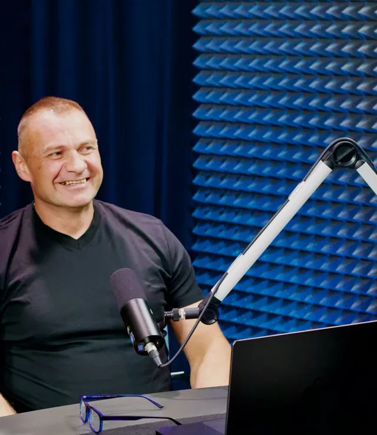
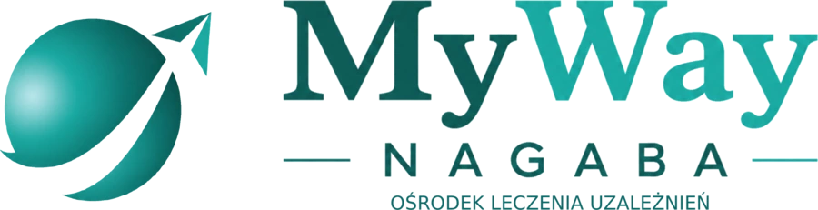
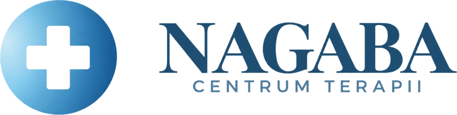
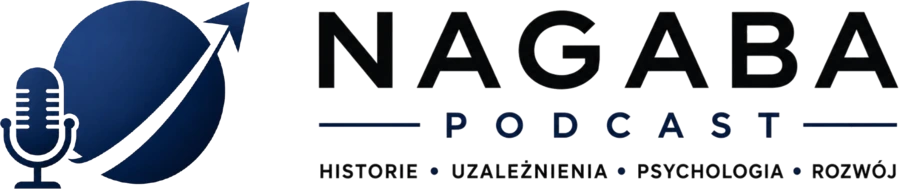
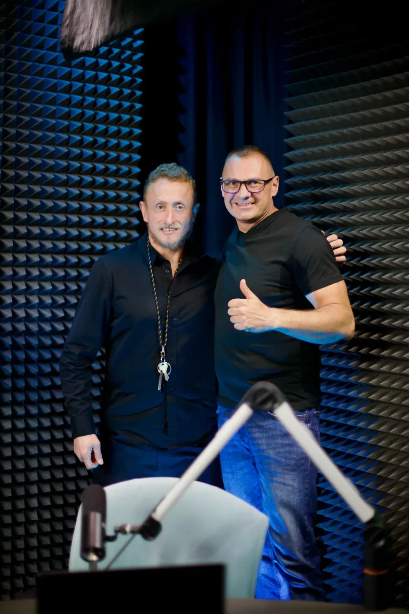
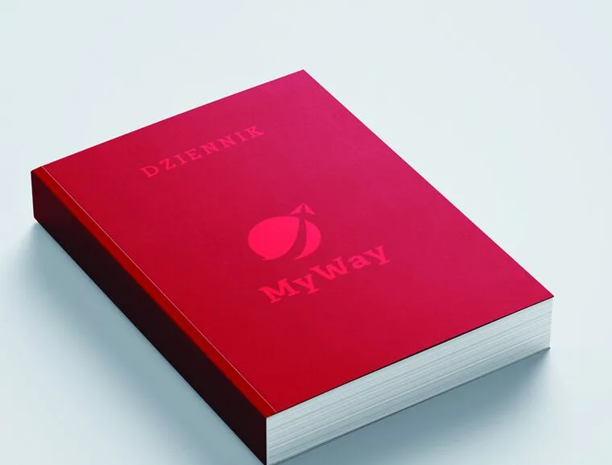

Porażenie mózgowe mnie nie zatrzymało. Uzależnienie prawie tak
Gościem jest Bartek. Żyje z porażeniem mózgowym, przeszedł przez uzależnienie i dziś żyje w trzeźwości. Opowiada, jak wyglądała jego droga.
Terapeuta uzależnień
Towarzyszę osobom w drodze do trzeźwości. Bez moralizowania, z szacunkiem i zrozumieniem. Sam przeszedłem tę drogę.

Świat Nagaba
Pobyt w ośrodku, terapia bez pobytu, rozmowy do słuchania i wiedza do nauki. Wybierz to, czego teraz potrzebujesz.

Leczenie stacjonarne w Kąpinie pod Wejherowem. Kameralny ośrodek, w którym pracuję jako terapeuta.
osrodek-myway.pl
Projekt w realizacji. Terapia indywidualna i grupowa bez pobytu w ośrodku oraz wsparcie dla rodzin i bliskich.
Zobacz, co planujemy
Raz w miesiącu rozmawiam z ludźmi, którzy przeszli swoją drogę. Na YouTube i Spotify.
Posłuchaj odcinkaArtykuły, materiały edukacyjne i Dziennik do codziennej pracy nad sobą.
edu-myway.plWkrótce · projekt w realizacji
Centrum jest w przygotowaniu. Tak będzie wyglądać oferta: pomoc na każdym etapie zdrowienia, od pierwszej rozmowy po codzienne życie w trzeźwości.
Nagaba Podcast
Rozmawiam z ludźmi, którzy przeszli swoją drogę. Nowy odcinek raz w miesiącu.
Gościem jest Bartek. Żyje z porażeniem mózgowym, przeszedł przez uzależnienie i dziś żyje w trzeźwości. Opowiada, jak wyglądała jego droga.

Do czytania i do pisania
Książka · Wydawnictwo Feeria
O uzależnieniu bez ściemy. Praktyczny plan wyjścia.
Praktyczny przewodnik dla osób w drodze do trzeźwości. Napisany z perspektywy kogoś, kto sam przez to przeszedł i od lat pomaga innym.

Dziennik MyWay
Cztery wydania na cztery pory roku. Zamówisz go w sklepie EduMyWay.
O mnie
Jestem terapeutą uzależnień. Od 8 lat pracuję z osobami, które chcą odzyskać swoje życie, i od 8 lat sam żyję w trzeźwości.
Moje podejście opiera się na zrozumieniu, nie na ocenianiu. Pomagam zrozumieć mechanizmy uzależnienia i znaleźć własną drogę do zdrowienia. Wierzę, że każdy zasługuje na szansę i na kogoś, kto będzie przy nim bez moralizowania.
Towarzyszę osobom w drodze do trzeźwości. Bez moralizowania, z szacunkiem i zrozumieniem.
Halo tu Polsat. Upadek, który stał się siłą: o uzależnieniu, trzeźwości i pomaganiu innym.
Konsultacje
Każda rozmowa jest inna, bo każda historia jest inna. Spotykamy się online albo stacjonarnie, w bezpiecznej i poufnej atmosferze.
Konsultacja indywidualna
500 zł / 60 min
Jedna godzina indywidualnej rozmowy i wsparcia.
Zadzwoń: 731 395 295 Napisz e-mailPełna poufność i dyskrecja
Pytania i odpowiedzi
Krystian Nagaba to terapeuta uzależnień z ośmioletnim doświadczeniem, od 2018 roku w trzeźwości. Założył prywatny ośrodek terapii uzależnień MyWay w Kąpinie pod Wejherowem, napisał książkę „Wygraj trzeźwe życie” (Wydawnictwo Feeria) i prowadzi Nagaba Podcast.
Zadzwoń pod numer 731 395 295 albo napisz na kontakt@osrodek-myway.pl. Konsultacja indywidualna trwa 60 minut i kosztuje 500 zł. Odbywa się online (Zoom) lub stacjonarnie.
Nagaba Centrum Terapii to projekt w realizacji, start wkrótce. Centrum będzie prowadzić ambulatoryjną terapię uzależnień i wsparcie dla bliskich. W planowanej ofercie są: terapia indywidualna, terapia grupowa, wsparcie terapeutyczne dla rodzin i bliskich, konsultacja wstępna z doborem formy pomocy, indywidualny plan zdrowienia, przygotowanie do leczenia stacjonarnego, kontynuacja terapii po pobycie w ośrodku oraz zapobieganie nawrotom.
Ośrodek MyWay w Kąpinie to leczenie stacjonarne, czyli terapia połączona z pobytem. Nagaba Centrum Terapii to projekt w realizacji: wkrótce ruszy tam terapia ambulatoryjna, bez pobytu. Centrum będzie przygotowywać do leczenia stacjonarnego i prowadzić dalszą terapię po pobycie w ośrodku.
Nagaba Podcast jest na YouTube oraz na Spotify. Nowy odcinek ukazuje się raz w miesiącu. Pierwszy odcinek miał premierę 24 września 2026 roku.
Książkę Krystiana Nagaby „Wygraj trzeźwe życie” (Wydawnictwo Feeria) zamówisz na stronie wygrajtrzezwezycie.pl.
Wsparcie terapeutyczne dla rodzin i bliskich będzie w ofercie Nagaba Centrum Terapii, które jest w realizacji. Już teraz możesz zadzwonić pod numer 731 395 295 i zapytać o dostępne formy pomocy.
Kontakt
Jeśli szukasz wsparcia w drodze do trzeźwości albo martwisz się o kogoś bliskiego, zadzwoń lub napisz.
Ośrodek MyWay ul. Wichrowe Wzgórza 21, 84-200 Kąpino